Interpretability, Security & AI Ethics
Pierre Stock - Facebook AI Research
Deep Learning in Practice - MVA 2019
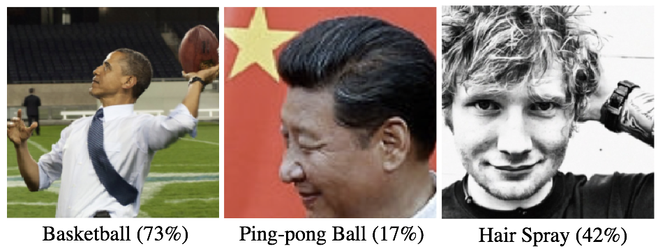
Summary
Goal: Approach the notion of interpretability in Deep Learning through the study of biases and adversarial examples
- Uncovering biases
- Examples of biases
- Superpixels activations
- Adversarial examples
- Classical white box attacks
- Classical defenses and how to circumvent them
- Welcome to the real life: black box attacks
Examples of biases (1/3)
Unbiased look at dataset bias [A. Torralba et al., 2011]
Despite the best efforts of their creators, modern datasets appear to have a strong build-in bias
Cross-dataset generalization difficult to demonstrate
Biases when collecting and labelling the images
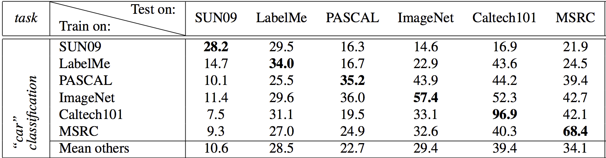
Examples of biases (1/3)
Biases when collecting the images

Examples of biases (1/3)
Biases when labelling the images
Try exploring label hierarchy for ImageNet and the 1000 standard labels
Images are often intrinsicly multi-label

Examples of biases (1/3)
Biases when labelling the images
Try exploring label hierarchy for Imagenet and the 1000 standard labels
Images are often intrinsicly multi-label
Guess the class of those ImageNet train images!
Examples of biases (2/3)
CNNs are biased towards texture [R. Geirhos et al., 2018]
Two contradictory hypotheses: shape versus texture
Demonstrates the importance of shape for humans (psychological study) and the prevalence of texture for CNNs
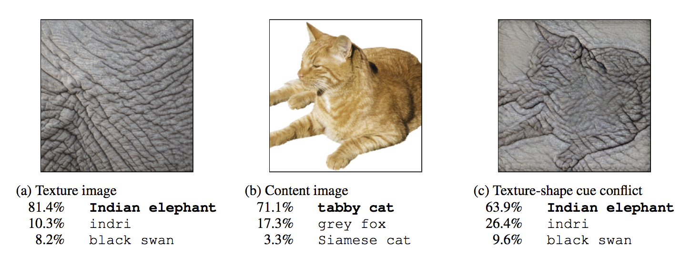
Examples of biases (3/3)
ConvNets and ImageNet beyond Accuracy [P. Stock & M. Cisse, 2018]
Pairs of images sampled from the Internet demonstrating racial biases
Dataset balancing vs. class balancing
Exercise caution! Biases are numerous and diverse. For example, ImageNet ping-pong players are often dressed in red.

Biases & learning
It is very hard to build a good dataset
Biases are essential for learning, we use them every day!
Desirable versus undesirable biases
Biases come from various sources: dataset collection, dataset balancing, network architecture (convolutions) inducing a strong prior on the data distribution...
Building trust for Deep Learning models by opening the black box
Superpixels activations
"Why Should I Trust You?"": Explaining the Predictions of Any Classifier [M.T. Ribeiro et al., 2016]
Explain the predictions of any (binary) classifier $f$ that acts on images $z$ by approximating it locally with an interpretable model $g$. Here, $g$ acts on the vector $z' \in \{0,1\}^d$ denoting the presence or absence of the $d$ superpixels that partition the image $z$, $g(z') = w_g^Tz'$
Finding the best explanation $\xi(x)$ among the candidates $g$ for image $x$
\[\xi(x) = \argmin_{g \in G} \mathcal L(f, g,\pi_x) + \Omega(g)\]
Minimizing a local weighted loss $\mathcal L$ between $f$ and $g$ in the vicinity $\pi_x$ of $x$, regularized by the complexity $\Omega(g)$ of such an explanation.
\[\Omega(g) = \begin{cases} 0 & \textrm{if}~~~\|w_g\|_0 < K \\ +\infty & \textrm{otherwise} \\ \end{cases}\]
Superpixels activations
Objective
\[\xi(x) = \argmin_{g \in G} \mathcal L(f, g,\pi_x) + \Omega(g)\]
Local weighted loss
\[\mathcal L(f, g, \pi_x) = \sum_{z, z'\in \mathcal Z}\pi_x(z)\left(f(z) - g(z')\right)^2\]
where $\mathcal Z$ if the dataset of $n$ perturbed samples obtained from $x$ by randomly activating or deactivating some super-pixels in $x$.
Note that $z'$ denotes the one-hot encoding of the super-pixels whereas $z$ is the actual image formed by those super-pixels.
Finally, $\pi_x(z)$ is the exponential kernel $\pi_x(z)= e^{\frac{\|x-z\|^2}{\sigma ^2}}$ and the problem is solved using Lasso + Least squares
Superpixels activations
Find $g$ per source image $x$ and display the top $k$ superpixels with the largest positive weights
Ambulance or jeep?
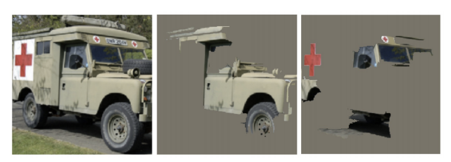
Superpixels activations
Find $g$ per source image $x$ and display the top $k$ superpixels with the largest positive weights
Explanation path for basketball class

A small detour through weakly supervised learning
Multi-label classification. Exploring the Limits of Weakly Supervised Pretraining [D. Mahajan et al., 2018]
- Train on 3.5 billion Instagram images with hashtags, takes 22 days on 336 GPUs
- To compare with classical ImageNet training on 1 million images, takes 7-8 hours on 4 GPUs
Gives excellent and robust features (e.g. last layer of the network before the softmax)
No consensus on performance metric (except for transfer learning)
Adversarial examples
Intriguing properties of Neural Networks [C. Szegedy et al., 2013]
Given a network $f_\theta$ and a sample $(x, y)$, an adversarial example is a perturbed version of $x$, $\tilde x = x + \delta_x$ such that
- $\delta_x$ is small enough for $\tilde x$ to be undistinguishable from $x$ by a human
- $\tilde x$ is incorrectly classified by the network
Non-targeted adversarial example: predict any wrong class $\ne y$
\[\tilde x = \argmax_{\tilde x \colon \|\tilde x - x\|_p \leq \varepsilon} \ell(f_\theta(x), y)\]
Targeted adversarial example: predict a specific wrong class $\tilde y$
\[\tilde x = \argmin_{\tilde x \colon \|\tilde x - x\|_p \leq \varepsilon} \ell(f_\theta(x), \tilde y)\]
where $\varepsilon$ is the strength of the adversary and $\ell$ the cross-entropy loss
Adversarial examples
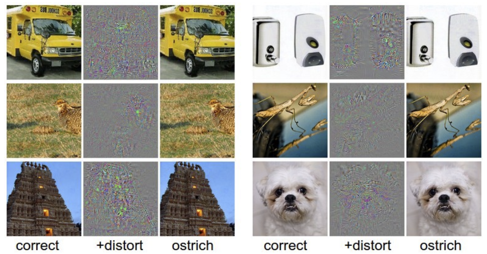
(distort noise is scaled for displaying purposes)
Adversarial examples
Defense against the Dark Arts
Real life challenges for adversarial examples (slide credit: Alexandre Sablayrolles)
- Bypassing filters for nude/terrorist content on social media
- Fooling self-driving cars
- Face detection: unlocking phones
Note that the noise $\delta_x$ is not random, so no chance for this to happen by accident (especially for targeted attacks). Interesting complement: Robustness to random perturbations [D. Hendrycks et al., 2018]
Ideas for defending agains adversarial examples
- Input transformations
- Secret database of keys
- Adversarial training
- Regularization (cf. Lipschitz constant)
Measuring the success of an attack
Given a set of $n$ images $(x_1, \dots, x_n)$, an attack generates $(\tilde x_1, \dots, \tilde x_n)$. We measure the success rate as a function of the $L_2$ dissimilarity
\[\frac 1 n \sum_{i=1}^n\mathbf 1(f_\theta(x_i) \ne f_\theta(\tilde x_i)) \qquad \frac 1 n \sum_{i=1}^n \frac{\|\tilde x_i -x\|_2}{\|x_i\|_2}\]
By convention we do not attack already misclassified images. A strong adversarial attack has a high success rate with a low normalized $L_2$
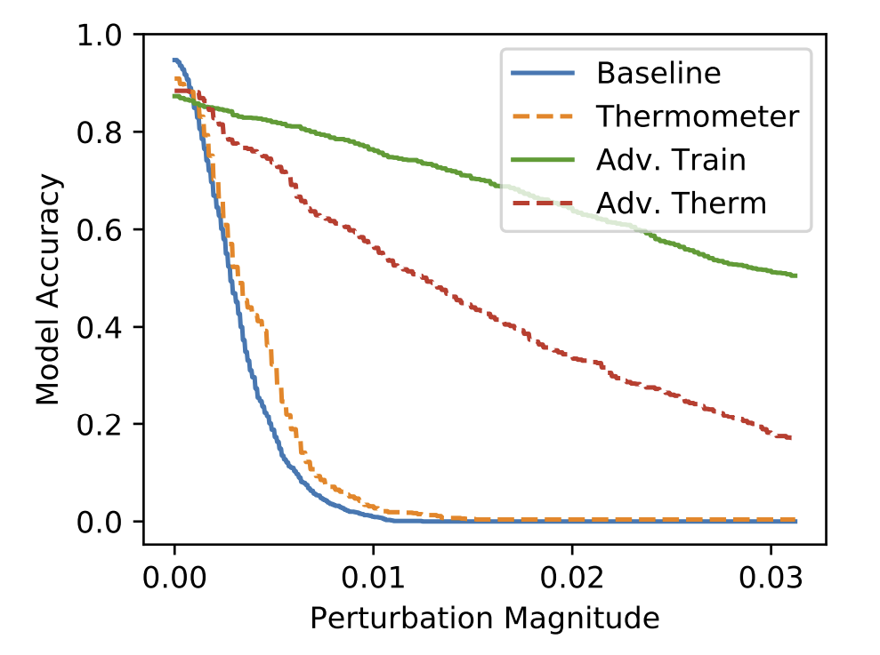
Classical white-box attacks: IFGSM
White box: full access to the model and in particular to its gradients
First-order Taylor expansion of $\ell(f_\theta(x), y)$ between $x$ and $\tilde x$
\[\ell(f_\theta(\tilde x), y) = \ell(f_\theta(x+\delta_x), y) \approx \ell(f_\theta(x), y) + \nabla_x\ell(f_\theta(x), y)^T(\tilde x - x)\]
Hence for an untargeted attack
\[\tilde x = \argmax_{\tilde x \colon \|\tilde x - x\|_p \leq \varepsilon} \ell(f_\theta(x), y) \approx \argmax_{\tilde x \colon \|\tilde x - x\|_p \leq \varepsilon} \nabla_x\ell(f_\theta(x), y)^T(\tilde x - x) \]
When $p=+\infty$, we obtain
\[\tilde x = x + \varepsilon \cdot \text{sign}(\nabla_x\ell(f_\theta(x), y))\]
How to change it for a targeted attack towards class $\tilde y$ ?
\[\tilde x = x - \varepsilon \cdot \text{sign}(\nabla_x\ell(f_\theta(x), \tilde y))\]
Classical white-box attacks: IFGSM
Generally, perform at most $m$ steps with a small step size
\[\tilde x^{k+1} = x^k + \varepsilon \cdot \text{sign}(\nabla_x\ell(f_\theta(x^k), y))\]
Variant:project $x^k$ on the "manifold of images" (pixels values are always in range $[0,255]$, or $[0,1]$ if normalized)
\[\tilde x^{k+1} = \text{clamp}_{[0, 1]}\left(x^k + \varepsilon \cdot \text{sign}(\nabla_x\ell(f_\theta(x^k), y))\right)\]
Plotting test accuracy as a function of $L_2$ dissimilarity (source)
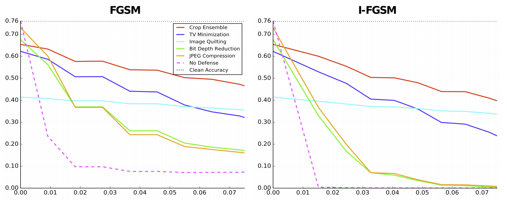
Classical white-box attacks: IFGSM
Perform at most $m$ steps until image is misclassified
\[\tilde x^{k+1} = x^k + \varepsilon \cdot \text{sign}(\nabla_x\ell(f_\theta(x^k), y))\]
Pytorch code draft for 1 iteration (exercice: complete it - add the loop)
# assume (image, target) correctly classified by the network
# allow gradient computation for image
image.requires_grad = True
# forward pass
output = model(image)
loss = criterion(output, target)
# backward pass
optimized.zero_grad()
loss.backward()
# IFGSM step, iterate if still misclassified by the network
image.data.add_(step_size * image.grad.sign())
Classical white-box attacks: Deep Fool
Deep fool [SM Moosavi-Dezfooli et al., 2015] projects $x$ onto a linearization of the decision boundary defined by a binary classifier $g$ for $m$ iterations
\[\tilde x^{k+1} = x^k - \frac{g(x^k)}{\|\nabla_x g(x^k)\|^2_2}\nabla_x g(x^k)\]
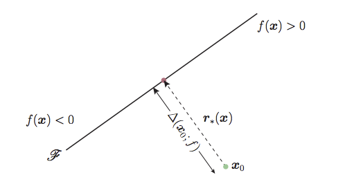
Multi-class: project to the closest hyperplane
Classical white-box attacks: Carlini
Towards Evaluating the Robustness of Neural Networks [Carlini et al., 2016] combines an $L_2$ regularization term with a hinge-like loss
\[\tilde x = \argmin_{\tilde x}\|\tilde x - x\|^2 - \lambda\cdot \text{max}\left(-\kappa, \text{prob}(f_\theta(x))_y - \text{max}\left(\text{prob}(f_\theta(x))_{\tilde y}\mid \tilde y \ne y\right)\right)\]
where $\kappa$ is a margin and $\lambda$ controls the trade-off between regularization and perturbation
Solved by gradient descent! (traditionally using the Adam optimizer)
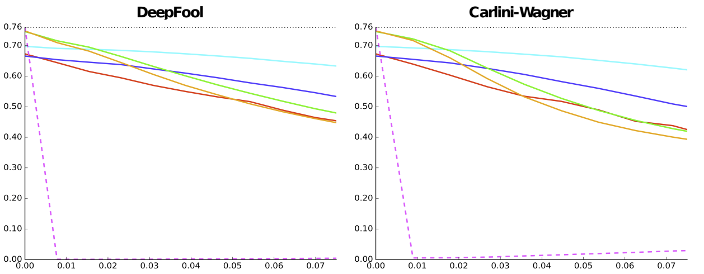
Adversarial patch
Adversarial patch [T.B. Brown et al., 2017]
Adversarial turtle
Synthetizing Robust Adversarial Examples [A. Athalye et al., 2017]
Classical defenses: input transformations
First idea: blurr the image a bit
Why is this a bad idea?
Blurring is equivalent to applying a convolutional kernel like the following
\[\begin{bmatrix} 1 & 2 & 1 \\ 2 & 4 & 1 \\ 1 & 2 & 1\end{bmatrix}\]
So it is equivalent to add a layer to the network, so we can still back-propagate through it and bypass the defense!
Other ideas: jpeg compression, random resized crops, dropping some pixels and reconstructing using Total Variations (see Countering Adversarial Images using Input Transformations [C. Guo et al., 2018] )
Classical defenses: image quilting
Image quilting: reconstruct images by replacing small patches with patches from “clean” images
The clean patches act as secret key and are part of a database that is not known by the attacker
The patches are selected by uniformly picking one of the $k$ nearest neighbors in the clean patches database (in pixel space) of the corresponding patch from the adversarial image
Motivation: the resulting image only consists of pixels that were not modified by the adversary
Circumventing Classical defenses: the return of the gradients
Expectation over Transformation (EOT). For defenses that employ randomized transformations of the input (e.g. random crops), compute the gradient over the expected transformation of the input. Formally, transformation $t$ sampled from $T$
\[\nabla_\theta \mathbb E_{t\sim T}(f_\theta(t(x))) = \mathbb E_{t\sim T}(\nabla_\theta f_\theta(t(x)))\]
Backward Pass Differentiable Approximation (BPDA). Let $f^i$ by a non-differentiable layer of $f_\theta$. Find $g$ differentiable such that $g(x) \approx f^i(x)$,
- During forward pass, use $f^i$
- During backward pass, replace $f^i$ with $g$
Exemple: jpeg compression ($g =$ identity)
Classical defenses: Adversarial training
Train on adversarial examples until the model learns to classify them correctly. Hard to fool but large computational cost.
Standard training. Given training data $\mathcal D$, choose network weights $\theta$
\[\theta^* = \argmin_\theta \mathbb E_{(x, y) \in \mathcal D}\ell(f_\theta(x), y)\]
Adversarial training. Given training data $\mathcal D$, choose network weights $\theta$
\[\theta^* = \argmin_\theta \mathbb E_{(x, y) \in \mathcal D}\left[\max_{\delta \in [-\varepsilon, \varepsilon]^n}\ell(f_\theta(x+\delta), y)\right]\]
To approximately solve this formulation, solve the inner maximization problem by generating adversarial examples using e.g. IFGSM.
Understanding adversarial attacks
Targeted adversarial attacks require a more important budget (in terms of $L_2$ dissimilarity)
Superpixels activations: either reveals the relevant object supporting the prediction or creates an ambiguous context (ConvNets and ImageNet beyond Accuracy [P. Stock & M. Cisse, 2018])
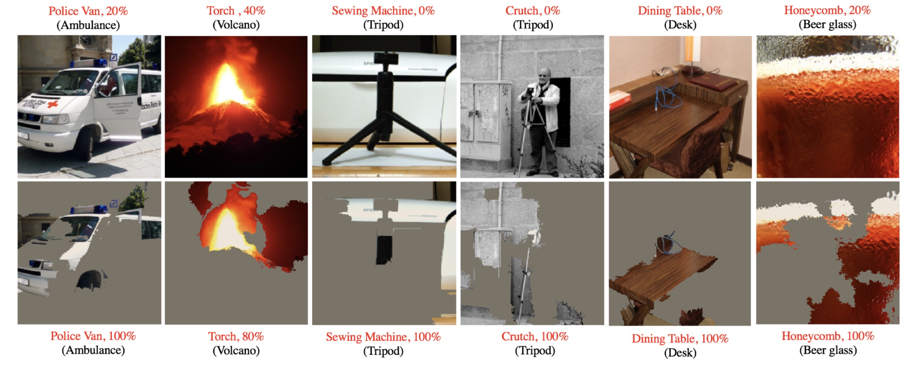
Welcome to the real life: black-box setup
The model to attack ("the Oracle"") is unknown. Only possibility to query it and see the label.
Fist idea: Transfer adversarial samples generated with a similar network
Better idea, if unlimited number of queries and access to output label of the Oracle: train a model to mimic the behavior of the Oracle
Realistic setup if limited number of queries, for example, limited number of uploads to a social media app/website: approximate the gradient
Welcome to the real life: black-box setup
Practical Black-Box Attacks against Machine Learning [N. Papernot et al., 2016]
Train a model to mimic the behavior of the Oracle
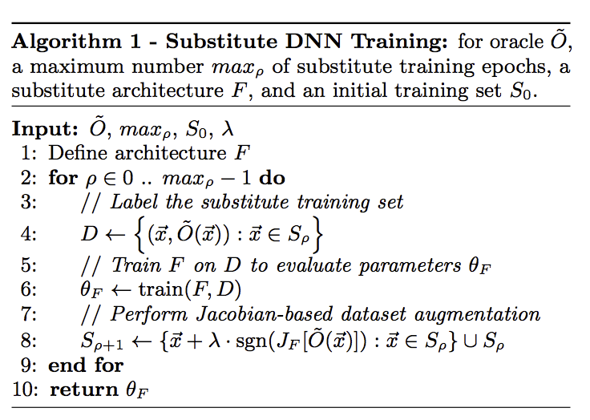
Welcome to the real life: black-box setup
Black-box Adversarial Attacks with Limited Queries and Information [A. Ilyas et al., 2018]
Idea: approximate the gradient of the loss function $\ell$ wrt $x$ by querying the classifier on samples around $x$ rather than computing it by backpropagation
We draw $n$ samples $\tilde x_i = x + \sigma \delta_i$ where $\delta \sim \mathcal N(0, 1)$. We can show
\[\nabla_x \mathbb E\left(\ell(f_\theta(x)), y)\right) \approx \frac{1}{n\sigma}\sum_{i=1}^n \delta_i \ell(f_\theta(x + \sigma \delta_i)), y)\]
In practice, for one ImageNet sample on a classical ResNet (binary classes) $n \approx 50$ and $\sigma \approx 0.001$.